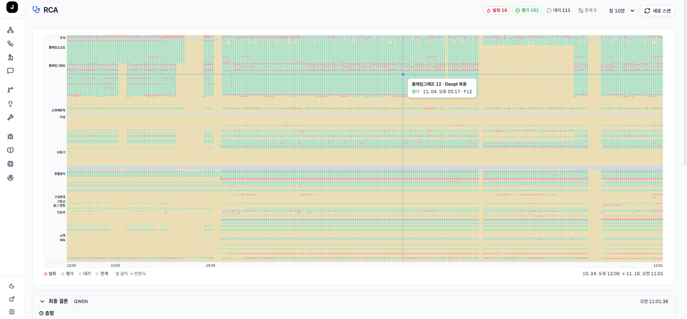
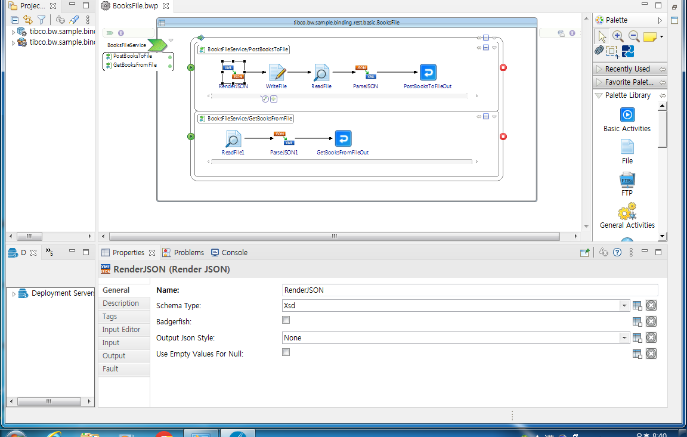
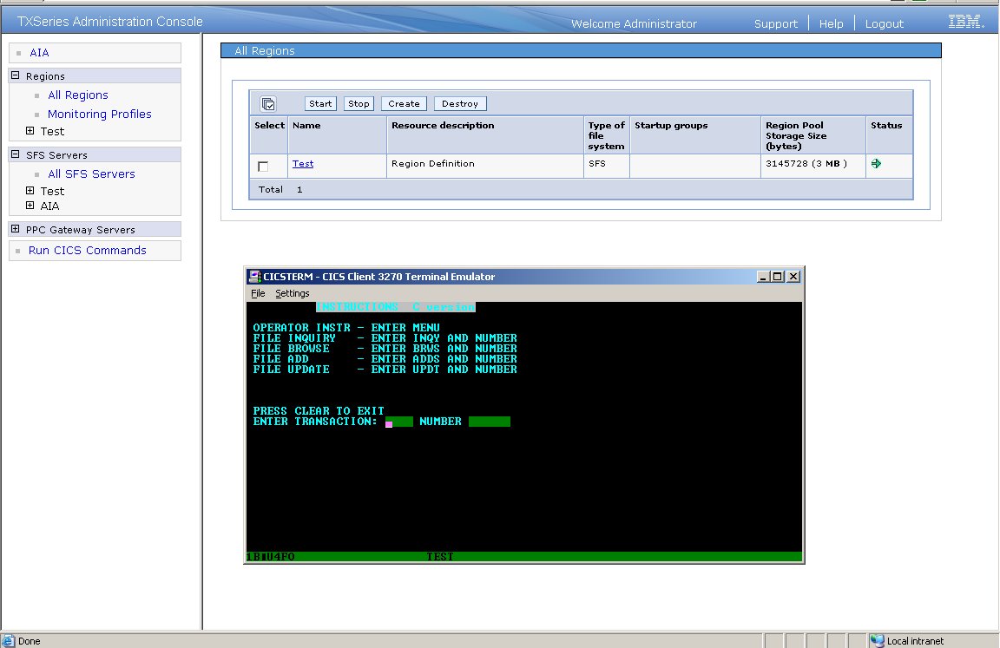
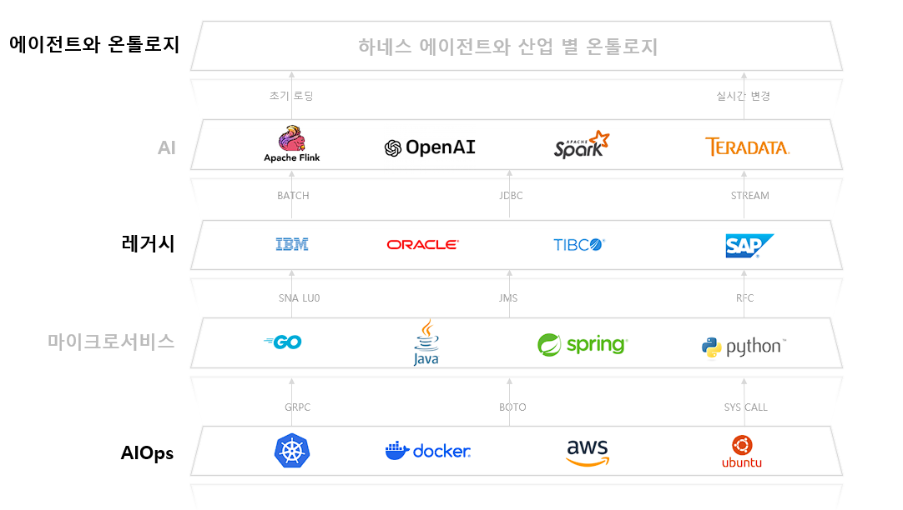

온톨로지
JuneAI 온톨로지는 간단하고, 의사결정에만 집중한다
JuneAI 온톨로지는 RAG·그래프·파이프라인·레이크·메타데이터·리니지·BI를 필요로 하지 않는다. 기존 시스템을 변경하거나 추가 개발이 필요 없고, 재시작도 필요 없다 — 심지어 직원 교육도 필요 없다.

JuneAI(줄여서 JAI 자이)는 온톨로지로 업무 프로세스의 병목과 문제점을 식별하고, 에이전트와 시뮬레이터는 올바른 의사결정을 지원한다. JuneAI는 다양한 레거시·플랫폼·서비스를 계측하고, 이를 토대로 온톨로지와 에이전트를 구성한다.
JuneAI 온톨로지는 RAG·그래프·파이프라인·레이크·메타데이터·리니지·BI를 필요로 하지 않는다. 기존 시스템을 변경하거나 추가 개발이 필요 없고, 재시작도 필요 없다 — 심지어 직원 교육도 필요 없다.
JuneAI는 자율 운영과 자가 치유를 지원하며 다양한 워크플로우를 구성할 수 있다. 문제가 발생하면 진단과 조치안이 이미 준비돼 있어 — 운영자는 승인 여부만 결정하면 된다.

알람이 쏟아지든 하나도 없든, JuneAI는 이상 탐지에서 출발해 근본 원인을 분석하고 문제를 해결한다 — 무증상·무신호·무알람의 경우에도 JuneAI 자율 운영은 작동한다.

이상탐지를 사용하면, 장애가 되기 이전에 사전 징후를 포착하고 사전에 대응할 수 있다. 근본 원인 분석 이전에 이상 탐지를 먼저 사용하라.

선도적인 JuneAI Observability를 사용해서 근본 원인 분석을 이해하고 개선할 수 있다. 우수한 JuneAI의 하네스 엔지니어링으로, AI와 LLM의 정확도를 향상할 수 있다.

JuneAI는 IBM CICS, SAP, SIEBEL, Oracle EBS, PeopleSoft, TUXEDO, SWIFT 등 레거시 시스템에 온톨로지와 에이전트를 손쉽게 구성할 수 있다. JuneAI로 마이크로서비스에서 시작해 레거시 시스템 안에서 끝나는 전 구간 거래를 모니터링할 수 있다.

JuneAI는 문맥 전파가 보통 끊기는 구간에서도 추적을 전파하고, 다시 이어 주는 도구를 제공한다. OpenTelemetry를 확장해 비동기 흐름, 커널 신호, 레거시 전파, 프로파일을 하나로 상관한다.

분산 추적과 프로파일링으로 JuneAI는 webMethods Integration Server·TIBCO BusinessWorks· IBM CICS·SAP·SIEBEL·Oracle EBS·PeopleSoft·TUXEDO를 비롯한 수십 종의 레거시 시스템 내부의 근본 원인을 분석한다. 이를 온톨로지로 쉽게 표현한다.

온톨로지는 지연·포화·병목·배포·변경·호출 순서 같은 이벤트를 실시간으로 드러낸다. AI는 온톨로지와 상호작용하고, 이러한 방식으로 산업별 온톨로지를 구성한다.

JuneAI는 IBM ITBench·SREGym 같은 공개 벤치마크에서 최상위 점수를 달성했으며, 오픈소스 LLM과 함께 에이전트를 온프레미스로 구동한다 — 비용이 낮고, 보안 정책과도 충돌하지 않는다.

JuneAI의 근본원인 정확도는 프런티어 모델뿐 아니라 가벼운 온프레미스 오픈소스 모델에서도 뛰어나게 유지된다. 그 정확도를 보장하는 것은 믿을 수 있는 하네스 기반의 근본원인 분석 방식이다.

JuneAI 에이전트는 돌고 있는 서비스를 즉시 계측한다 — 코드 변경도, 재시작도 없이. 살아 있는 자바 서비스를 멈추지 않고 메서드 호출을 기록·확인하고, 운영에서만 재현되는 버그를 재시작·재배포 없이 그 자리에서 확인한다.

JuneAI 에이전트는 기술과 업무의 근본 원인을 식별하고, 분석하고, 해결한다. 드러나지 않는 지연·부족·병목 등의 문제점을 식별하고, 원인을 분석하고 조치한다. 에이전트와 온톨로지는 단순한 기술이다. 기술은 방법이지 목적이 아니다. JuneAI는 고객의 문제를 정확하게 이해하고, 해결해서 최적의 의사결정을 돕는 것이 주요 목적이다.

기존 시스템을 변경하지 않고, 단기간에 적은 비용으로 온톨로지·에이전트·시뮬레이터로 자율운영과 의사결정 환경을 구축할 수 있다. 기존 조직과 역할을 그대로 유지하고, 레거시를 변경하지 않고 개선할 수 있다. 벤더에 종속적이지 않고, 모든 구축은 재시작과 코드 변경 없이도 잘 작동한다.
관측가능성과 AIOps라는 토대 위에 온톨로지·에이전트, 레거시, 업무 시뮬레이션까지 — 자율 운영과 자가 치유를 구현한다
자율 운영과 운영자가 직접 판단하는 직접 운영이 있다. 크루즈 컨트롤과 완전 자율 주행처럼 상황에 맞게 전환한다.
자세히 보기 →관측·계측이라는 하나의 기반 위에 AIOps와 온톨로지가 함께 선다. 재시작·코드 변경 없는 독자적 계측과, 하네스로 튜닝한 에이전트가 핵심이다.
자세히 보기 →데이터 파이프라인·레이크·리니지·BI 없이, 운영 코드를 그대로 두고 온톨로지를 구성한다. 진짜 경쟁력은 하네스 엔지니어링 — 저렴한 오픈소스 모델로도 프론티어급 정확도.
자세히 보기 →레거시를 건드리지 않고 내부 메서드 수준까지 추적한다. SAP RFC·TUXEDO 메서드 등 전 구간을 추적해 근본 원인을 분석하고, 산업별 온톨로지로 제공한다.
자세히 보기 →병목·부족·지연·변경 — 기술과 업무는 결국 같은 문제를 푼다. 다만 업무는 산업마다 달라 표준화가 어렵고, 의사결정 전에 결과를 미리 보는 시뮬레이션이 필요하다.
자세히 보기 →온톨로지는 보통 무거운 데이터 플랫폼을 요구한다. JuneAI는 그 대신 관측가능성을 써 단위 부서가 바로 도입한다. 오픈텔레메트리의 레거시·비동기 한계까지 보강했다.
자세히 보기 →문맥을 유지하고, 변경을 기록하고, 상태를 관리한다. 이벤트와 관계를 모니터링하고 영향과 변경을 시뮬레이션한다. 레거시를 변경없이 더하며, 팔란티어보다 정교하고 정확하게 추적한다.
자세히 보기 →TIBCO FOS·Oracle BRM·Siebel·ASAP·MetaSolv 위에서 유무선 결합상품 개통과 회선·네트워크 고장관리를 온톨로지로 구성한다. 처리 지연·네트워크 장애·주문 폴아웃의 원인을 분석하고, 해결책을 시뮬레이션해 최적 조치를 고른다.
데모 자세히 보기 →다양한 마이크로서비스와 IBM CICS·SAP·TUXEDO가 쿠버네티스에서 함께 돈다. 온톨로지가 서비스와 리소스를 묶어 지연·병목·부족·포화의 원인을 분석하고, 자율 운영과 사람 운영을 함께 지원한다.
데모 자세히 보기 →JuneAI는 다양한 레거시 시스템 내부의 근본 원인까지 분석한다. 레거시에 온톨로지와 에이전트를 구성하면, 업무를 개선하고 효과적으로 운영할 수 있다. JuneAI의 레거시 기술력과 노하우는 압도적이다. SAP와 CICS에도 AI 플랫폼을 적용할 수 있다.
SAP, CICS 등 다양한 레거시 기반으로 온톨로지·에이전트·시뮬레이터를 구성하고, 근본 원인 분석과 의사 결정을 처리하는 데모를 제공한다. 언제든 데모를 요청할 수 있다. 다른 경쟁사 제품과 무엇이 다른지 쉽게 이해할 수 있다.